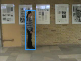
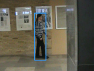
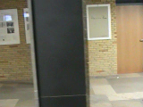
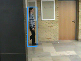

This is the homepage of our IHCI 2014 paper "Fusion of tracking techniques to enhance adaptive real-time tracking of arbitrary objects", which presents an algorithm for tracking arbitrary objects and learning their appearance on-the-fly. The tracking starts with a single annotated frame, where a bounding box around the target is given. The tracking algorithm then computes a new bounding box around the target for each of the following frames and is able to re-detect it after an occlusion. On this website, you can find the code, configurations, and detailled benchmark results that were reported in the paper.
To give an example of what the tracking algorithm should be able to do, we show four frames of sequence F of the Bonn Benchmark on Tracking. The blue bounding box is the output of our tracker.
   
First image: Tracking is initialized by the ground truth. Second image: The algorithm tracks the position of the person. Third image: There is no bounding box because the person is not visible anymore. Fourth image: The person is re-detected as soon as it becomes visible again.
Code
You can find the source code of the tracker in our GitHub repository. In order to verify our results, you need to make sure to checkout the tag IHCI2014, as the following commits changed the tracking performance slightly. We had bugs in the extended HOG feature extraction, whose fixes affect the benchmark results.
Configurations
The following configurations files are necessary to confirm our benchmark results:
- bobot.cfg Image sequences with ground truth using the BoBoT dataset (paths may need adjustment)
- BT.cfg Baseline tracker
- OF.cfg Tracker with optical-flow-based motion model
- LC.cfg Tracker with learning condition
- OF-LC.cfg Tracker with optical-flow-based motion model and learning condition
- OF-LC-SW.cfg Tracker with optical-flow-based motion model, learning condition, and sliding-window-based measurement model
Benchmark results
The detailed tracking output of the evaluation contains a directory for each tested tracker variation:
- BT Baseline tracker
- OF Tracker with optical-flow-based motion model
- LC Tracker with learning condition
- OF-LC Tracker with optical-flow-based motion model and learning condition
- OF-LC-SW Tracker with optical-flow-based motion model, learning condition, and sliding-window-based measurement model
Insides those directories, there are further directories for each of the BoBoT image sequences. Within those, there are the following files:
- run# Tracking output (in BoBoT format) of run # (0-19)
- overlap# Overlap ratios of run # (0-19)
Limitations
The tracking algorithm is far from perfect and has its limitations. For example, the used linear SVM and HOG features capture the shape of the target and therefore allow tracking under out-of-plane rotations (as long as the contour does not change as much), but other details, that may be necessary to discriminate the target from similar objects, might get lost. If the shape does change drastically, as is the case with deformations (e.g. a gymnast during performance), the tracking usually fails. Furthermore, the resolution of the image sequences is important, as images below 320x240 pixels may be too small to capture information, while images above might need other HOG parameters (cell size of 8 instead of 5, more cells per target patch) and another minimum target size.
Further limitations:
- Sudden appearance changes (especially right in the beginning)
- Objects similar in appearance to the target
- Deformations
- Very low resolution (below 320x240 pixels) or image quality
Paper & Poster
Paper and poster were published at the international conference on Intelligent Human Computer Interaction (IHCI) 2014 in Évry (near Paris), France.